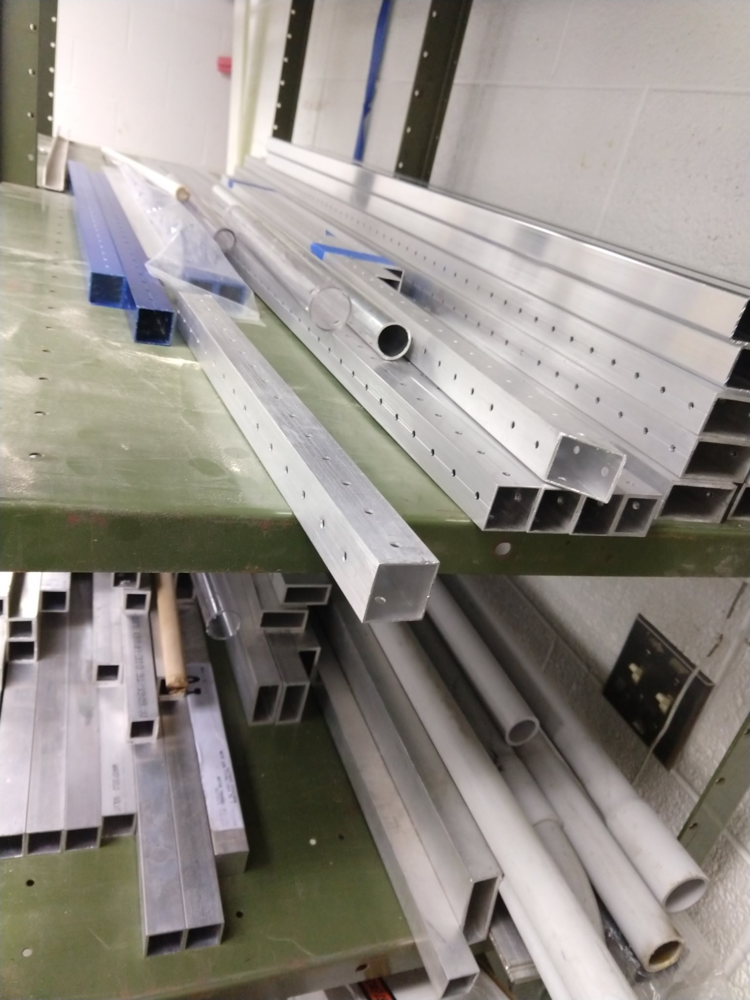
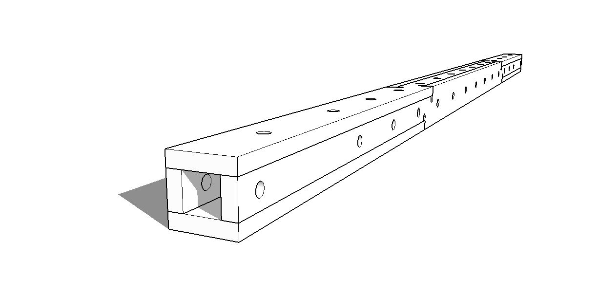
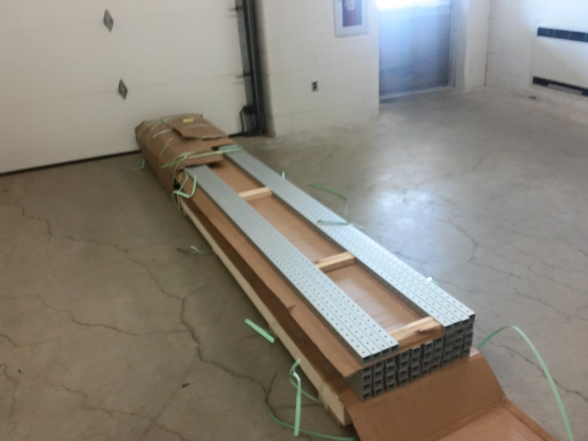
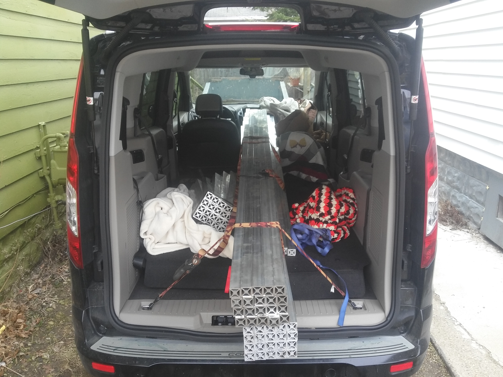
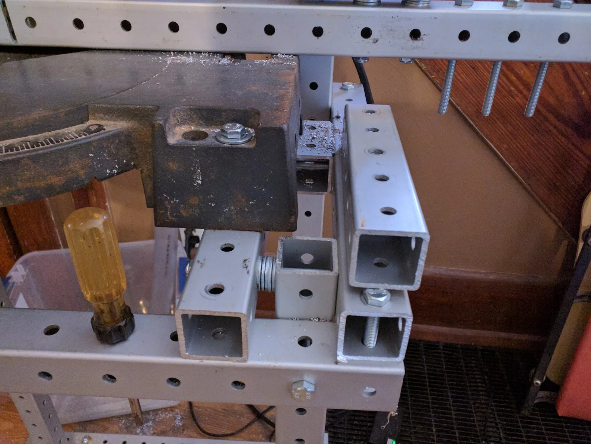

frames revision 1985




Challenges
Most projects require a physical structure. Sizes, shapes, and configurations vary widely.
Approaches
Construct projects using a standardized space frame kit optimized for local production.
Profile
Replimat frames are constructed using standard lengths of material with a square profile or cross-section. Frame sections may be solid or hollow, constructed from a single piece, laminated, or joined. All Replimat frame sections share the same width, which is 1.5 inches (38.1 millimeters) across each side. Frames of larger or smaller widths may be produced, and work with all of the construction techniques found here. Frames of evenly divisible widths interoperate.
Widths
Frames of larger cross section require fewer holes than frames of smaller cross section that are the same length. Counterintuitively, thicker frame is sometimes faster or less expensive to produce than thinner frame. Thicker frame also creates stronger tri-joints and requires fewer nuts and bolts to create frames of equivalent size and strangth as compared to frame of reduced width. Thinner frame can allow accurate and reproducible model building before final assembly at larger scale. Thinner frame also allows for a finer resolution in the hole pattern, easing complex mounting problems.
Hole Pattern
Holes are centered on each face of the frame and spaced regularly in a repeating pattern at a distance equal to the width of the frame. This geometrical arrangement allows the frame members to reliably produce rigid joints in three dimensions.
Lengths
Frame lengths are intentionally limited to 2, 3, 4, 5, 10, 15, 20, 25, 30, 35, 40, 50, 60, 80, and 100 holes per side. These lengths have been chosen to allow for the creation of all necessary joint configurations (using lengths 2, 3, 4, and 5) as well as to allow for lengths with a center hole and lengths which are evenly divisible by two. The reduced set of lengths allows for improved reuse from project to project, easier identification in photographs and diagrams, and simpler production, handling, and shipping.
Nuts and bolts
Frame sections are joined together using three lengths of bolts, suitable for 1, 2, or 3 stacked frames and share a single size of washers and nuts.
Tools
Frame assembly requires two 13mm wrenches. A socket wrench or battery powered electric socket wrench are highly recommended for quick and easy [dis]assembly.
Joints
Three frame sections can be joined with three nuts and bolts to form a strong three dimensional joint orienting each frame section perpendicular to the others, called a tri-lapping joint or tri-joint. Other joining techniques allow for triangular and hinged joints, which are sufficient to build several useful linkages including the Peaucellier–Lipkin linear motion linkage, Jansen’s linkage, leading link suspension, and more.
Off-pattern holes

Variations
In the imperial version, popular hole sizes are 11/32 inch, and 7/16 inch and popular bolt sizes are 5/16 inch and 3/8 inch. For the metric frames, we can use a 6 mm bolt and 7-8 mm holes for the 25 mm frame; a 9 mm bolt and 10-11 mm holes for the 40 mm frame and 12 mm bolt and 13-14 mm holes for the 50 mm frame. Use the 8,11 and 14 mm holes for wooden frame, and the 7, 10 and 13 mm holes for metal frame. Bolt sizes (6, 9 and 12 mm)
Materials
Steel / Aluminum
United states
*Any construction steel supplier.
- 8020 Inc Ready Tube
- McMaster-Carr Bolt-Together Framing
- Allied Tube Telespar and Quick-Punch
- Allied Tube Square-Fit
- S-Square Square Post Perforated
- Ultimate Highway Products Ulti-Mate steel highway sign posts
Canada
*Any construction steel supplier.
*Unistrut
UK
*Any construction steel supplier. (Undrilled)
New Zealand
<sbailard_> VikOlliver, steel and aluminum box section down in NZ, is it metric, or '25.4 mm'?
<VikOlliver> Strangley it's in approx 25mm increments...
- sbailard_ is beside himself in surprise.
<VikOlliver> It's sold as 25x50mm box section but you know what they mean...
Wood
Warning
In North America, wood which is called '1x1' or '2x2' is actually smaller than 1 inch or 2 inches in cross section. This is unfortunate but legal. Speak to a lumber yard or other supplier about getting 'wood which is actually sized 1 inch by 1 inch or 2 inches by 2 inches'. They will be able to help you, possibly by setting up a small order correctly sized material with a local mill, which may be a quick job. (If you are a woodworker, this paragraph is obvious, and we apologize. And you have a table saw.)
A common so-called "two-by-four" (38 mm x 89 mm, 1.5 inch x 3.5 inch)
can be ripped and planed into two separate grid beams (each 38 mm square).
Does it make any sense to do slightly less work, converting that so-called "2x4 board" into one beam that acts like those 2 grid beams permanently attached to each other, 38 mm x 76 (1.5" x 3.0") with a double row of holes on the 3.0" wide side?
*Nails - After checking carefully with a nail finder.
*Grit - Use a stiff plastic brush to clean off your wood. Stone pebbles will chip your saw blade.
References
- Wikibooks: robot building materials implies that cardboard (!) is best for quick prototypes; for functional robots, "wood is probably the best material to start with."; where wood isn't quite durable enough, aluminum is the best metal -- better than steel for most robots.
** ''Is "edgeboard"https://web.archive.org/web/20100804002012/http://www.arcspace.com/gehry_new/index.html?main=/gehry_new/cardb/cardb.html the same as corrugated cardboard? It's apparently strong enough to hold up full-sized humans; is it strong enough to hold up an extruder nozzle?''
** ''Is it possible to build a FlatPack RepStrap mostly out of "Laminated Laser-cut Cardboard"http://forums.reprap.org/read.php?178,64851?''
*** Izhar Gafni has made a type of bicycle with a composite frame (''cardboard & epoxy?/some polyester?'') ("Cardboard Bicycle"). It is apparently waterproof and strong enough to hold up full-sized humans. It is definitely worth an investigation, if nothing else for the other end of the M8 threaded rod there.. are on several levels; Epoxy Granite.
{{OpenJSCAD|title=CAD|code=
// Here we define the user editable parameters:
function getParameterDefinitions() {
return [
{ type: 'float', name: 'beam_width', caption: 'Beam width', default: 38.1 },
{ type: 'float', name: 'hole_radius', caption: 'Radius of holes', default: 8 },
{ type: 'choice', name: 'length', caption: 'Frame length (holes)', values: [2,3,4,5,10,15,20,25,30,35,40,45,50,55,60,70,80,90,100], captions: ["2","3","4","5","10","15","20","25","30","35","40","45","50","55","60","70","80","90","100"], default: 10 }
];
}
// zBeam(length) - create a vertical bitbeam strut 'length' long
// xBeam(length) - create a horizontal bitbeam strug along the X axis
// yBeam(length) - create a horizontal bitbeam strut along the Y axis
// translateBeam(beam, [x, y, z]) - translate bitbeam struts in X, Y, or Z axes in units 'beam_width'
var cylresolution=16;
var beam_width=38;
var hole_radius=8;
function main(params) {
cylresolution=(params.quality == "1")? 64:16;
beam_width=params.beam_width;
hole_radius=params.hole_radius;
return zBeam(params.length);
}
function xHole(i) {
return CSG.cylinder( {
start: [-1, beam_width/2, i*beam_width + beam_width/2],
end: [beam_width+1, beam_width/2, i*beam_width + beam_width/2],
radius: hole_radius,
resolution: cylresolution
} );
}
function yHole(i) {
return CSG.cylinder( {
start: [beam_width/2, -1, i*beam_width + beam_width/2],
end: [beam_width/2, beam_width+1, i*beam_width + beam_width/2],
radius: hole_radius,
resolution: cylresolution
} );
}
function zBeam(length) {
var cube = CSG.cube({
center: [beam_width/2, beam_width/2, (length*beam_width)/2],
radius: [beam_width/2, beam_width/2, (length*beam_width)/2]
});
var holes = [];
for (var i = 0; i < length; i++)
{
holes.push(xHole(i));
holes.push(yHole(i));
}
var beam = cube.subtract(holes);
beam.properties.myConnector = new CSG.Connector([10, 0, 0], [1, 0, 0], [0, 0, 1]);
return beam;
}
function yBeam(length) {
return translateBeam(zBeam(length).rotateX(-90), [0,0,1]);
}
function xBeam(length) {
return translateBeam(zBeam(length).rotateY(90), [0,0,1]);
}
function translateBeam(beam, t_vector) {
return beam.translate(t_vector.map(function(n) { return beam_width*n; }));
}
}}